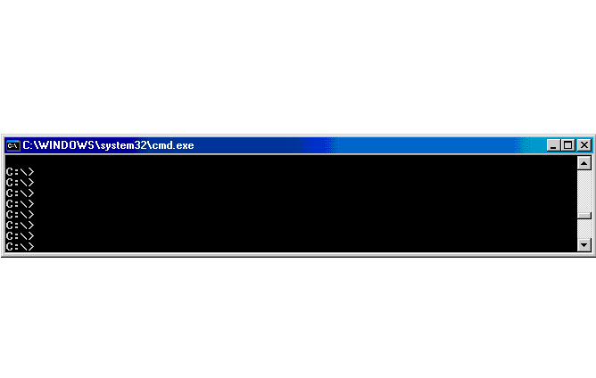

pywinauto is a GUI automation library written in pure Python and well developed for Windows GUI. At its simplest it allows you to send mouse and keyboard actions to dialogs and controls on both Windows and Linux, while more complex actions are supported on Windows only for now.
pywinauto 0.6.0 (October, 31, 2016)
- This big release introduces MS UI Automation (UIA) support.
- Documentation is built continuously now on ReadTheDocs. See also our improved Getting Started Guide
- Modules
keyboardandmousecan be used out of any window context now. And they work on Linux as well! - Multi-backend architecture allows to add new platforms support. Just implement two classes and register your backend!
- Code style is much closer to PEP8:
ClickInput->click_input. Thoughbackend='win32'is ~80% backward compatible with pywinauto 0.5.4. - Initial implementation of the win32_hooks module. Keyboard and mouse event handlers can be registered in the system.
A brand new team logo.
This is the new team icon. Thanks, Anna, who created the icon for the team, cat Walter.
PS: Logo for the pywinauto library is still wanted.
Example
It is simple and the resulting scripts are very readable. How simple?
1 2 3 4 5 6 7 8 9 | from pywinauto.application import Application
# Run a target application
app = Application().start("notepad.exe")
# Select a menu item
app.UntitledNotepad.menu_select("Help->About Notepad")
# Click on a button
app.AboutNotepad.OK.click()
# Type a text string
app.UntitledNotepad.Edit.type_keys("pywinauto Works!", with_spaces = True)
|
Setup
- Just run
pip install pywinauto(Py2.7+, Py3.3+)
or
- Install pyWin32 extensions (no need for Active Python except 3.4 64-bit)
- Download the latest version
- Just unpack and run
python setup.py install
Supported controls
- Native Windows controls (full support through Win32 API)
- .NET Windows Forms (full support through MS UI Automation starting with pywinauto 0.6.0)
Demo
Here is a short screencast with Pywinauto in action:
